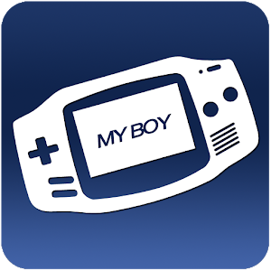
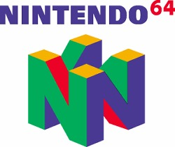

aca podras encontrar y descargar los emuladores de las consolas para poder divertirte desde tu telefono o desde tu computador gratis y sencillo
un Emulador antiguo de una consola llamada "gameboy" que servia par ajugar juegos como pokemon, kirby, legend of zelda, bomberman entre otros muchos mas juegos y podras disfrutar de juegos antiguos que sirven con esta consola.

Este es el emulador de la nintendo64 con el que podras disfrutar de todo el catálogo de la mítica consola de Nintendo desde nuestro Android, algunos juegos como: Super Smash Bros, Pokemon Stadium, Mario Kart 64, Zelda: Ocarina of Time, Resident Evil 2, Doom 64.
